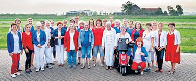

<div class="event-info">
	<div>
		<div class="img-wrap">
	
		</div>
		<div class="songs">
			<p>Blowing In The Wind</p>
			<p>It's Raining Again</p>
			<p>Weather With You</p>
			<p>Walking On Sunshine</p>
			<p>Dust In The Wind</p>
			<p>California Dreaming</p>
			<p>Ritme Van De Regen</p>
			<p>Umbrella</p>
			<p>It's Raining Men</p>
		</div>
		<div class="content-wrap">
    <p><strong>Vrouwenkoor DZKO uit Oosthuizen</strong></p>
	<p>Vrouwenkoor DZKO is een enthousiast koor met circa 35 leden.</p>
	<p>Zij brengen een gevarieerd repertoire met zowel musicalnummers als popmuziek waaronder Adele, U2 en Tina Turner.</p>
	<p>En Nederlandse nummers van bijvoorbeeld BlØf, Claudia de Breij en Ilse de Lange.</p>
	<p>&nbsp;</p>
	<p>Dirigent: Jeannet van der Woude</p>
	<p>&nbsp;</p>
	<p><a href="http://www.dzko-oosthuizen.nl" target="_blank">http://www.dzko-oosthuizen.nl</a></p>
		</div>
	</div>
</div>
